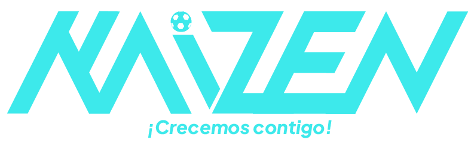
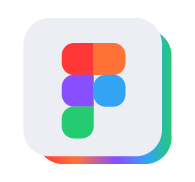
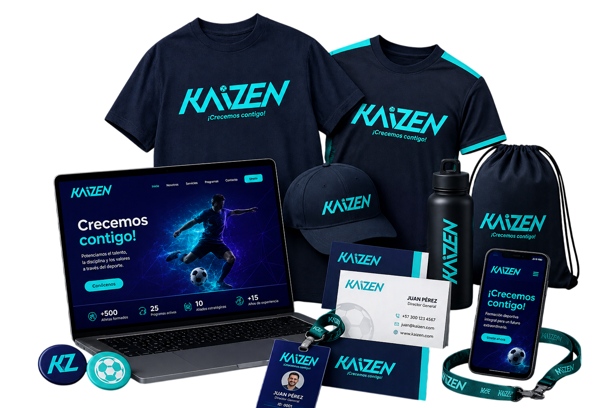

Diseño del Futuro
Descubre una nueva forma de interactuar con interfaces elegantes y minimalistas utilizando Glassmorphism y flexbox.
Visualización
Interfaces fluidas que se adaptan a cualquier resolución gracias a Flexbox.
Estética
Un fondo dinámico resaltado por los paneles de cristal traslúcido.
Características Premium
Nuestra tecnología combina rendimiento gráfico avanzado con un estilo visual pulido.
Scroll Fluido
El fondo se desplaza y reacciona de forma no lineal con interpolación matemática para máxima suavidad.
Espectro Dinámico
Los colores cambian suavemente a tonos morados y cianes a medida que te adentras en la página.
Parallax en Capas
Las partículas flotantes e imágenes de fondo se mueven en diferentes planos virtuales 3D.
Proyecto 1 / Tienda de Articulos Deportivos

Kaizen es una marca que apoya a escuelas de formación de futbol profesional a integrar una identidad clara que permita resaltar el crecimiento en materia de talento joven, cultura y apropiación del deporte local, permitinedo generar confianza en comunidades como barrios y asocioaciones que aporten de forma positiva a los proyectos deportivos y carreras profesionales de las nuevas generaciones.
Herramientas utilizadas

Paleta de colores

Proyecto 2 / Tienda de Articulos Deportivos
Kaizen es una marca que apoya a escuelas de formación de futbol
profesional a integrar
una identidad clara que permita resaltar
el crecimiento en materia de talento joven,
cultura y apropiación
del deporte local, permitinedo generar confianza en
comunidades
como barrios y asocioaciones que aporten de forma positiva
a los proyectos deportivos y carreras profesionales de las nuevas generaciones.
Herramientas utilizadas
Paleta de colores
EDICIÓN DE FOTOMONTAJES
Proyecto 2 / Tienda de Articulos Deportivos
Kaizen es una marca que apoya a escuelas de formación de futbol
profesional a integrar
una identidad clara que permita resaltar
el crecimiento en materia de talento joven,
cultura y apropiación
del deporte local, permitinedo generar confianza en
comunidades
como barrios y asocioaciones que aporten de forma positiva
a los proyectos deportivos y carreras profesionales de las nuevas generaciones.
Herramientas utilizadas
Paleta de colores
¿Listo para Comenzar?
Escríbenos para agendar una demostración o resolver tus dudas. La innovación te espera.